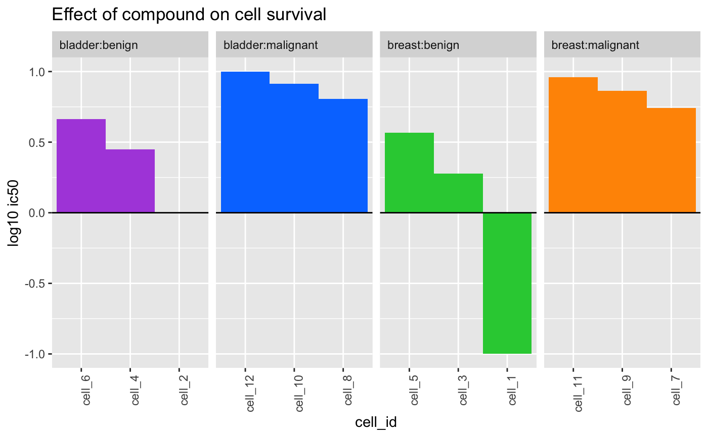
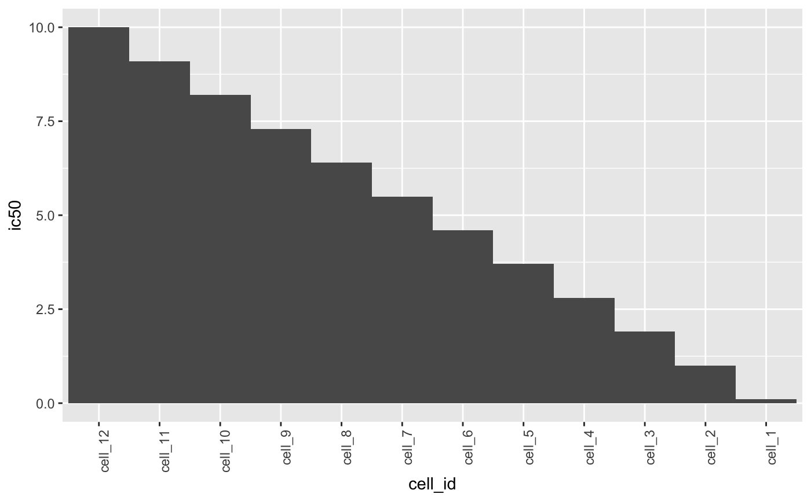

Plot waterfall
plotWaterfall(object, ...) # S4 method for data.frame plotWaterfall( object, sampleCol, valueCol, interestingGroups = NULL, trans = c("log10", "log2", "identity"), fill = getOption(x = "acid.fill.discrete", default = acidplots::scale_fill_synesthesia_d()), labels = NULL )
| object | Object. |
|---|---|
| sampleCol |
|
| valueCol |
|
| interestingGroups |
|
| trans |
For more information: help(topic = "scale_x_continuous", package = "ggplot2") |
| fill |
To set the discrete fill palette globally, use: options(acid.fill.discrete = ggplot2::scale_fill_viridis_d()) |
| labels |
|
| ... | Additional arguments. |
ggplot.
Updated 2020-07-09.
## data.frame ==== object <- data.frame( cell_id = paste("cell", seq_len(12L), sep = "_"), ic50 = seq( from = 0.1, to = 10L, length.out = 12L ), tumor_type = rep( x = c("breast", "bladder"), times = 6L ), tumor_subtype = rep( x = c("benign", "malignant"), each = 6L ) ) plotWaterfall( object = object, sampleCol = "cell_id", valueCol = "ic50", interestingGroups = c("tumor_type", "tumor_subtype"), trans = "log10", labels = list( title = "Effect of compound on cell survival" ) )plotWaterfall( object = object, sampleCol = "cell_id", valueCol = "ic50", trans = "identity" )